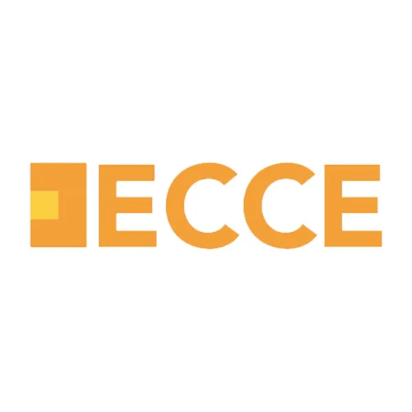
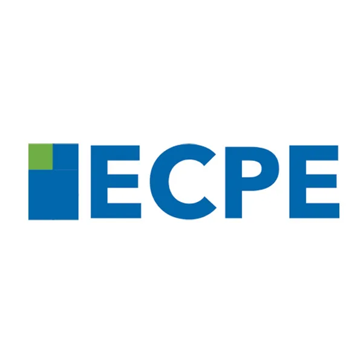

B2
Michigan
ECCE (B2)
Το πιο δημοφιλές πτυχίο Michigan, ιδανικό πρώτο βήμα για έφηβους και ενήλικες.Michigan's most popular certificate, an ideal first step for teens and adults.
Προετοιμάζουμε τους μαθητές μας για τις πιο έγκυρες εξετάσεις Αγγλικών παγκοσμίως.We prepare our students for the most respected English exams in the world.
Το πιο δημοφιλές πτυχίο Michigan, ιδανικό πρώτο βήμα για έφηβους και ενήλικες.Michigan's most popular certificate, an ideal first step for teens and adults.
Το ανώτατο πτυχίο Michigan, απόδειξη άριστης γνώσης της αγγλικής γλώσσας.Michigan's highest certificate, proof of excellent command of English.
Προετοιμασία και για τις εξετάσεις Cambridge, για όσους μαθητές το επιθυμούν.We also prepare students for Cambridge exams, for those who prefer this route.
Τα πτυχία Michigan μοριοδοτούνται στον ΑΣΕΠ, ιδανικά για επαγγελματική εξέλιξη.Michigan certificates score points with ASEP, ideal for career growth.

Το ECCE πιστοποιεί ότι ο μαθητής χειρίζεται άνετα τα Αγγλικά σε επίπεδο B2, με έμφαση στην πρακτική χρήση της γλώσσας.The ECCE certifies that a student comfortably handles English at B2 level, with an emphasis on practical language use.

Το ECPE είναι το ανώτατο πτυχίο Michigan, αποδεικνύοντας άριστη γνώση της αγγλικής σε ακαδημαϊκό και επαγγελματικό επίπεδο.The ECPE is Michigan's highest certificate, proving excellent command of English at an academic and professional level.
Παράλληλα με το Michigan, προετοιμάζουμε μαθητές και για τις εξετάσεις Cambridge (B2 First & C2 Proficiency), για όσους χρειάζονται ή προτιμούν αυτή τη διαδρομή.Alongside Michigan, we also prepare students for Cambridge exams (B2 First & C2 Proficiency), for those who need or prefer this route.

Τα πτυχία Michigan (ECCE & ECPE) μοριοδοτούνται στον ΑΣΕΠ και αναγνωρίζονται ευρέως από εργοδότες, καθιστώντας τα ιδανική επιλογή για ενήλικες.Michigan certificates (ECCE & ECPE) score points with ASEP and are widely recognised by employers, making them an ideal choice for adults.
Πέρα από Michigan και Cambridge, προετοιμάζουμε μαθητές και για επιπλέον αναγνωρισμένες εξετάσεις, ανάλογα με τον στόχο τους.Beyond Michigan and Cambridge, we also prepare students for additional recognised exams, depending on their goal.
Εξετάζεται μόνο σε Listening & Reading. Ιδανικό για γρήγορη μοριοδότηση ΑΣΕΠ, με αποτελέσματα αμέσως.Tested in Listening & Reading only. Ideal for fast ASEP points, with immediate results.
Η διεθνής «γλώσσα» των πανεπιστημίων. Απαραίτητα για σπουδές και μεταπτυχιακά στο εξωτερικό.The international "language" of universities. Essential for studies and postgraduate programmes abroad.
Φιλικές, εναλλακτικές εξετάσεις, αναγνωρισμένες 100% από το ελληνικό Δημόσιο.Friendly, alternative exams, 100% recognised by the Greek public sector.